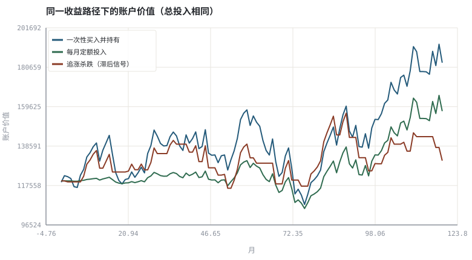

第 00 章投资是一套可验证的工程系统
把「买什么」改写成「定义目标 → 建立约束 → 构造假设 → 用数据检验 → 执行并复盘」的可复现流程。
本章位置：全书起点。第 01～02 章先定义「收益」和「风险」这两个最容易被误用的量，第 03 章才打开交易 App 看能买什么。
把投资当成分布式系统：行情是有延迟和丢包的事件流，策略是消费端逻辑，回测是回放，实盘是灰度，风控是熔断。没有监控的确定性结论，等价于没有测试的线上代码。
- 能把一次投资决策拆成目标、约束、数据、假设、检验、执行、复盘七层，并指出每层最容易出错的地方。
- 能说清全书主线：现金 → 产品 → 定价 → 组合 → 盘面 → 证据 → 执行 → 风险 → 复盘。
- 能区分「收益观点」与「可证伪的假设」，并用合成数据跑通第一个对照实验。
- 理解本书全部示例的零依赖契约与合规边界。
§知识点地图
每个知识点都配了 1～2 个扩展学习链接；本章完整资源清单见 扩展学习。
| # | 知识点 | 扩展学习 | 状态 |
|---|---|---|---|
| 1 | 投资收益的工程分解 | Rate of return · Logarithmic return | 正文已覆盖 |
| 2 | 可证伪假设与对照组 | CFA Institute · MIT OpenCourseWare · Finance | 正文已覆盖 |
| 3 | 风险溢价与成本 | Modern portfolio theory · Value at risk | 正文已覆盖 |
| 4 | 复利与费用 | Compound interest · Volatility drag | 正文已覆盖 |
| 5 | 回测与实盘的差别 | Backtesting · Walk forward optimization | 正文已覆盖 |
| 6 | 交易 App 的界面字段 | TradingView · 富途牛牛 / 富途证券 | 正文已覆盖 |
| 7 | 合成数据与固定随机种子 | Python random · Monte Carlo method | 正文已覆盖 |
| 8 | 长期主义 | CFA Institute · MIT OpenCourseWare · Finance | 正文已覆盖 |
§0.1把投资问题翻译成工程问题
零售交易 App 把投资压缩成几个按钮：搜索代码、看 K 线、下单。程序员容易把这件事误读为「找到一个正确的输入」。但投资真正的难点不是输入，而是在信息不完备、反馈有噪声、且每次试验都不可重复的条件下做决策——这更像线上系统的容量规划，而不像单元测试。
| 软件工程 | 投资系统 | 共同要回答的问题 |
|---|---|---|
| 需求文档 / SLA | 投资政策说明书（IPS） | 目标函数与硬性约束是什么 |
| 输入数据与 ETL | 行情、净值、财报、公司行动 | 数据口径是否对齐、是否含未来信息 |
| 单元测试 | 带已知真值的合成数据实验 | 指标实现是否真的度量了它声称的东西 |
| A/B 测试 | 样本外 / 滚动验证 | 结论在没有调过参数的数据上还成立吗 |
| 灰度发布 | 小仓位试运行 | 模型假设失效时损失是否可控 |
| 监控与告警 | 回撤、杠杆、集中度阈值 | 什么时候必须减仓而不是继续论证 |
| 事后复盘 | 绩效归因与决策日志 | 赚的钱来自能力、风险暴露还是运气 |
投资不是「预测价格」，而是在约束下管理一组带不确定性的现金流。一旦写成目标函数与约束，估值、组合、盘面、风控就只是同一份规格说明书的不同章节。
§0.2全书主线与五个学习阶段
全书 32 章按一条因果链排列，而不是按「基金入门 / 技术分析 / 量化」拼盘：先知道能买什么（产品与制度），再知道它值多少钱（定价与组合），再知道屏幕上画的是什么（盘面与识图），再知道一个想法怎么才算被验证（因子、偏差、回测），最后才谈真金白银怎么落地（执行、风险、复盘）。
| 阶段 | 章节 | 核心问题 | 交付物 |
|---|---|---|---|
| 一 · 共同语言与产品地图 | 00–08 | 钱放在哪里、规则如何、收益和风险怎么度量 | 产品字段表、净值与费用模型 |
| 二 · 定价、组合与资产配置 | 09–14 | 价格从哪里来、怎样分散、怎样再平衡 | 久期 / DCF / 有效前沿 / 配置策略 |
| 三 · 盘面语言与看图识图 | 15–20 | K 线、盘口、指标、形态到底编码了什么 | OHLCV 数据模型 + 可判定规则 + SVG 图 |
| 四 · 从直觉到可验证的证据 | 21–28 | 一个「规律」是因子、偏差还是数据挖掘 | OLS / 回测引擎 / 归因 / 多重检验 |
| 五 · 实盘、风险与长期主义 | 29–31、附录 | 怎么下单、下多大、怎么复盘 | 执行成本 / 仓位上界 / IPS |
任意一章都可以单独读，但顺序本身携带信息：把盘面放在定价之后，是为了让你先知道「价格是折现结果」再去看图；把回测放在因子之后，是为了让你先有可证伪的假设，再写回测引擎。
§0.3收益从哪里来，成本到哪里去
把账户的几何收益写成可审计的加法，是全书最有用的一条公式：
账户几何收益 ≈ 无风险利率 + Σ(因子风险溢价 × 暴露) + 定价误差/选股 − 管理费 − 交易成本 − 税费 − 行为损耗
前两项是你承担风险换来的补偿，第三项需要真本事或真信息，后面几项确定性为负。对新手而言，能稳定改善的往往不是「多抓一个涨停」，而是把费用、换手、追涨杀跌这三项减下来。第 01 章会量化费率与通胀的长期侵蚀，第 05 章量化交易成本，第 31 章把这些写进 IPS。
收益不可精确分解：因子暴露随时间漂移，成本与冲击和成交量互相影响。这个式子的价值在于给出一份检查清单，而不是给出一个可预报的数值。
§0.4本书的代码与数据约定
所有 Python 示例遵守同一契约：
1. 只用 Python 3 标准库 + 仓库内 tools/chart.py（纯标准库 SVG 绘图），无第三方包；
2. 自包含：行情/组合数据由代码里的模型合成，不联网、不读外部数据文件；
3. random.seed(7) 固定随机数，所有可调量集中在「参数区」；
4. 打印可手算核对的数值，并生成 fig/*.svg 矢量图（写入章节目录，可提交、可离线查看）；
5. 页面代码块与 code/*.py 由 tools/extract_code.py 自动同步。
全书 fig/*.svg 是由这些脚本生成的文本矢量图：可提交进 Git、可离线查看、浏览器直接 <img> 引用。绘图库 tools/chart.py 同样只用标准库，所以「看懂一张图」和「改出一张图」之间没有黑箱。
风险提示与免责声明：本书为教学材料，所有行情、净值、回测与图表均为合成数据或模型示意，不构成任何投资建议、产品推荐或收益承诺。历史表现与回测结果不代表未来收益；杠杆、衍生品、跨境与场外产品可能导致本金全部损失。真实投资须遵守所在市场的法律法规、投资者适当性管理、券商与基金销售机构的风险揭示，并自行承担决策后果。
§Python 分析实例
实验 0-1 · 同一行情下三种决策流程
#!/usr/bin/env python3
# -*- coding: utf-8 -*-
"""固定一条合成月度收益路径，比较一次性持有、定额投入与滞后追涨三种流程。
数据为合成数据或模型示意，仅用于教学，不构成投资建议。
"""
from __future__ import annotations
import math
import pathlib
import random
import statistics
import sys
sys.path.insert(0, str(pathlib.Path(__file__).resolve().parents[3] / "tools"))
from chart import Chart, candlestick, heatmap, BLUE, RED, GREEN, AMBER
FIG = pathlib.Path(__file__).resolve().parents[1] / "fig"
FIG.mkdir(exist_ok=True)
random.seed(7)
# ---- 参数区 ----
N = 120 # 月数
MU, SIGMA = 0.006, 0.045 # 合成月度收益的均值与波动
INVEST = 1000.0 # 每月可投入现金
CAPITAL = INVEST * N # 三种流程的总投入相同
# ---- 计算与作图 ----
rng = random.Random(7)
rets = [rng.gauss(MU, SIGMA) for _ in range(N)]
def path(returns, exposure):
v, out = 1.0, []
for r, e in zip(returns, exposure):
v *= (1 + e * r)
out.append(v)
return out
def mdd(xs):
peak, worst = xs[0], 0.0
for x in xs:
peak = max(peak, x)
worst = min(worst, x / peak - 1.0)
return worst
hold_f = path(rets, [1.0] * N)
chase_f = path(rets, [0.0] + [1.0 if rets[i - 1] > 0 else 0.0 for i in range(1, N)])
hold = [CAPITAL * v for v in hold_f]
chase = [CAPITAL * v for v in chase_f]
cash, shares, dca = CAPITAL, 0.0, []
for i in range(N):
buy = min(INVEST, cash)
cash -= buy
shares += buy / hold_f[i]
dca.append(shares * hold_f[i] + cash)
c = Chart(FIG / "00-decision.svg", "同一收益路径下的账户价值（总投入相同）",
xlabel="月", ylabel="账户价值")
c.line(range(N), hold, BLUE, label="一次性买入并持有")
c.line(range(N), dca, GREEN, label="每月定额投入")
c.line(range(N), chase, RED, label="追涨杀跌（滞后信号）")
print("图:", c.save())
print("终值 持有=%.0f 定投=%.0f 追涨=%.0f | 最大回撤 持有=%.1f%% 定投=%.1f%% 追涨=%.1f%%" %
(hold[-1], dca[-1], chase[-1], 100 * mdd(hold), 100 * mdd(dca), 100 * mdd(chase)))操作：不改代码先跑一遍，记录三行终值；再把 MU 改成 0 或负数，观察「定额投入」的相对表现如何变化。 预期与判读：三条曲线用的是完全相同的收益序列，差别只来自现金流规则与仓位规则。追涨规则只用了上一期信息，没有任何未来函数，却通常仍落后于简单持有——这就是「行为损耗」的可测量版本。
改参数看趋势：把 SIGMA 从 0.045 调到 0.09：波动越大，滞后信号被噪声触发的次数越多，差距一般越明显。 文件位置：part0/00-orientation/code/00-decision.py

代码块右上角可一键复制；仓库里的 code/*.py 由 tools/extract_code.py 从这些代码块自动抽取。脚本只用标准库、固定 random.seed(7)，运行后写出 fig/*.svg；批量运行用 ./tools/run_python.sh。
§本章参考资料
按本章知识点挑选的精读资料；更多检索入口见 扩展学习。
MIT OpenCourseWare · Finance
课程 · 参考资料投资学、资产定价与衍生品的免费课程材料
怎么用：免费的投资学与资产定价课程，适合补数学推导https://ocw.mit.edu/search/?q=finance
Investor.gov（SEC 投资者教育）
机构 · 参考资料复利、费用、风险与常见投资骗局的官方说明
怎么用：监管方写的复利、费用与风险科普，作为无利益冲突的起点https://www.investor.gov/
Bogleheads Wiki
课程 · 参考资料长期指数投资、再平衡与税费的实践型百科
怎么用：长期主义与低成本实践的系统化百科https://www.bogleheads.org/wiki/Main_Page
§常见误区
- 把「回测年化 20%」当成结论而不是待检验的假设。
- 用真实历史行情直接调参，再把同一段数据当样本外报告。
- 忽略交易成本、税费与申赎费，导致毛收益与净收益差一个数量级。
- 把教学用的合成数据误认为真实行情或收益承诺。
§习题与思考
- 把本章七层分解套用到一次真实的基金申购，写出每层你实际能拿到的信息。
- 修改示例的
INVEST与N，解释为什么「定投」在下跌市里终值可能更高、但总投入也可能更少。 - 举一个「看起来像选股能力、其实是因子暴露」的例子，并说明需要什么数据才能区分。
§扩展学习
以下资料按本章知识点挑选，可直接精读或对照真实数据；知识点地图里每一条也挂了 1～2 个直达链接。
- CFA Institute（机构）：投资组合管理、道德准则与从业者教育
CFA Institute - MIT OpenCourseWare · Finance（课程）：投资学、资产定价与衍生品的免费课程材料
MIT OpenCourseWare · Finance - Investopedia（教材）：产品、账户、订单与指标的术语速查
Investopedia - Bogleheads Wiki（课程）：长期指数投资、再平衡与税费的实践型百科
Bogleheads Wiki - Investor.gov（SEC 投资者教育）（机构）：复利、费用、风险与常见投资骗局的官方说明
Investor.gov（SEC 投资者教育）
继续扩展：在 Google Scholar 检索本章相关论文 · 在 MIT OCW 检索配套课程 · 在 arXiv 检索预印本 · 全书参考资源总表 · 附录 A 速查与链接总表
§延伸阅读与内链
- 下一站：第 01 章 · 货币时间价值：复利、通胀与实际收益 把复利、通胀与费率写成可计算的公式。
- 全书地图见 全书学习路线，章节清单见 全书目录。
- 代码约定见 使用说明；维护命令见 维护约定。